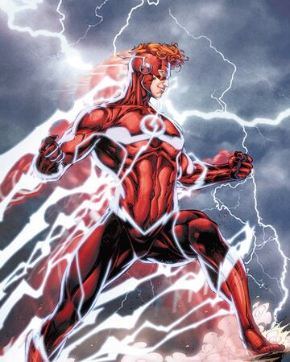
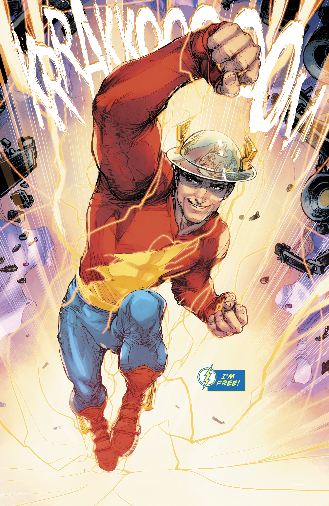
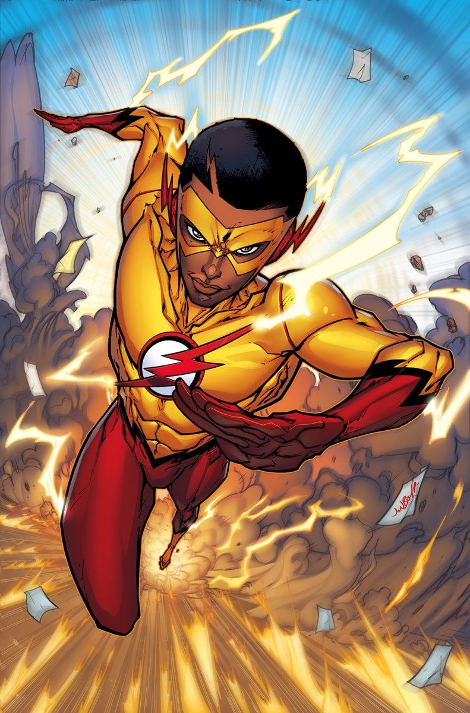

The Flash(Barry Allen)
Barry Allen is The Flash, the fastest man alive. Using his super-speed powers, he taps into the Speed Force and becomes a costumed crime-fighter. He is a founding member of the Justice League. When Barry was a boy, his parents' relationship wasn't going
well, and while he prepared to participate in a spelling bee at school, his mother Nora was struggling to encourage him despite working double shifts and trying to get a divorce from his father Henry. He received the divorce papers
on the day of the spelling bee, and because Nora had to work, he seethed and took Barry to school. When Nora returned from work, she was happy to see that her son had won the competition, but she was obligated to speak to Henry
about their relationship, and so Barry was sent to the bookstore in the meantime. By the time Barry returned, however, his mother had been murdered, and his father had been placed under arrest, though he professed his innocence.
Wally West is the Fastest Man Alive, and the third speedster known as the Flash. Using his Super-Speed powers, he wields the Speed Force and became a costumed crime-fighter. He was trapped in the Speed Force for years, with the world temporarily forgetting
his existence until his metaphorical "rebirth". He is also a founding member of the Teen Titans. One day, while visiting Iris at her friend Barry Allen's CSI lab at the Central City Police Department, Wally was struck by a bolt
of lightning and doused in chemicals just like the Flash was, which infused Wally with the power of a mysterious energy force called the Speed Force like his hero.

Wally West

Jay Garrick
As a boy, Jay Garrick used to read pulp magazine stories of the turn-of-the-century super-hero, Whip Whirlwind. Little did he know that he would be granted the same powers of super speed. Jay would go to Midwestern University in Keystone City where he
would double-major in chemistry and physics. An experiment he was working on during his junior year was to purify hard water without any residual radiation in a cyclotron. When a test tube of the hard water was accidentally spilled,
the fumes knocked him out. His friend Elliot Shapiro dragged him from the lab. After a week of unconsciousness, during which Jay's metabolism increased and his body rejected nutrients, he discovered that he had been given superhuman
speed by the accident, and he used this speed as the superhero, Flash.
Wallace West, the third Kid Flash, is the teenage sidekick of the Flash and the son of Daniel West, the third Reverse-Flash. Wally's parentage was a complicated story. Wally, like his older cousin who shares his name with him, was named after their great-grandfather.
Wally's father Daniel West hid his true identity from his son, bonding and remaining in the boy's life as his "uncle" rather than his father. Wally was originally a delinquent; he was disobedient and a troublemaker. When Wally's
mother went missing when the Crime Syndicate tore through Central City, his aunt Iris West took him in but even she couldn't keep him out of trouble.

Wally West II
 Home
Characters
locations
Media
Photo Gallery
Home
Characters
locations
Media
Photo Gallery